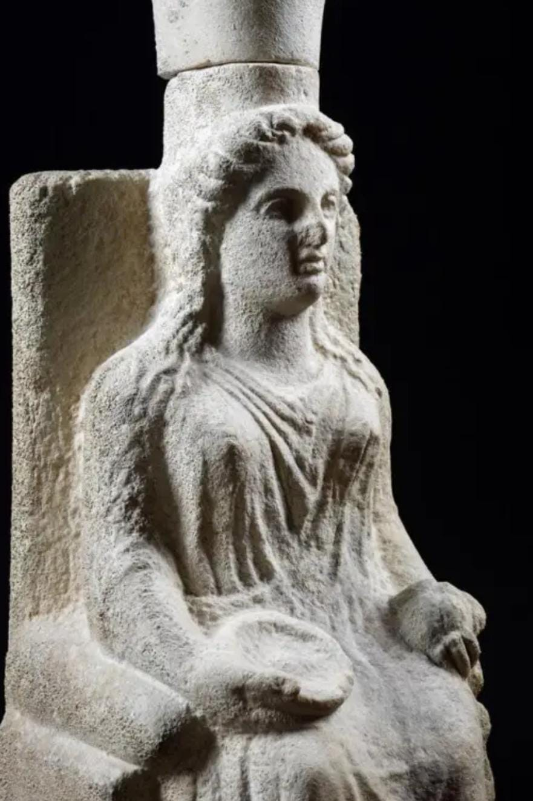
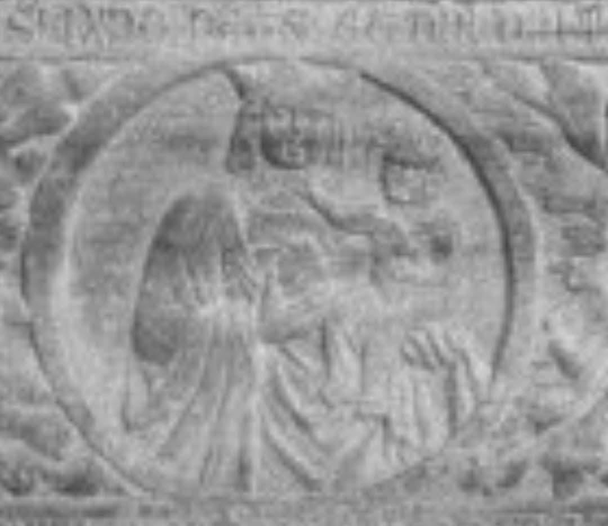
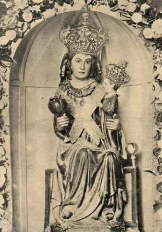

La statua lignea è stata realizzata nel 1921 da un anonimo scultore salernitano, su copia di quella antica (risalente al XIV sec.), distrutta dall’incendio nel 1918.
Rappresenta la Vergine Maria in trono, con il bambinello nella mano sinistra e la melagrana nella destra.
Oggetto del culto plurisecolare dei fedeli, questa raffigurazione è caratteristica della Basilica di Capaccio Vecchia.
Si possono notare alle spalle della statua, all’interno della nicchia, alcuni affreschi che appartenevano alla decorazione muraria originale di questa Chiesa.
Numerosi indizi collocano questa devozione in continuità con quella nei confronti della dea Era, patrona dell’antica città di Poseidonia; il primo indizio è l’iconografia, considerato che durante le campagne di scavo a Paestum sono state rinvenute numerosissime statuette fittili della dea Era, seduta in trono e con la melagrana nella mano destra.
La singolarità di questa raffigurazione e il suo passaggio da divinità pagana a icona cristiana è un segno importante di identità e continuità per la popolazione della Città di Capaccio Paestum, che in questa immagine ritrova le sue radici.
Anche oggi nella notte tra il 14 e il 15 agosto di ogni anno centinaia di persone si recano a piedi dinanzi a questa statua, omaggiando la Vergine con le “Cente votive”, costruzioni in legno a forma di barca, ornate con candele e fiori.
Questa affascinante tradizione è essa stessa un indizio della trasposizione del culto; infatti, l’usanza ha certamente origine negli antichi culti pagani, come ci confermano numerose evidenze archeologiche.
L’effigie della Vergine è stata solennemente incoronata, a nome di Papa Pio XII, dal Capitolo Vaticano il 2 maggio 1912, ufficializzando così il titolo di Madonna del Granato.